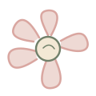
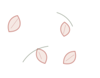

Coaching individuel · Reconnexion à soi · Alignement
Un espace pour ralentir, vous écouter,
clarifier ce qui compte vraiment pour vous
et avancer vers une vie qui vous ressemble davantage.
reconnexion à soi · alignement · valeurs · besoins · confiance · affirmation de soi · prise de recul · reconnexion à soi · alignement
valeurs · besoins · confiance · alignement
Et parfois, au milieu de tout cela, une question reste en suspens :
Et moi, qu'est-ce que je veux vraiment ?
Vous ressentez peut-être le besoin de ralentir, de prendre du recul, de comprendre ce qui se passe en vous ou simplement de déposer ce que vous portez depuis trop longtemps.
Vous avez envie de retrouver davantage de confiance, de clarté et d'alignement.
Le coaching peut être cet espace.
Un espace pour vous écouter sans jugement, mettre des mots sur vos besoins et vos valeurs, comprendre ce qui vous freine et avancer vers une vie qui vous ressemble davantage.
Parce que votre vie vous appartient.
Se choisir soi, ce n'est pas penser uniquement à soi.
C'est apprendre à écouter ses besoins, respecter ses valeurs et faire des choix qui nous ressemblent.


Vous vous reconnaissez ?
Et si vous vous accordiez enfin la même écoute que vous accordez aux autres ?
Découvrir mon approcheUn espace pour vous
Le coaching est avant tout un espace pour vous, un espace pour ralentir, prendre du recul. Afin de déposer ce que vous avez besoin de déposer, pour mettre des mots sur ce que vous ressentez. Pour comprendre ce qui se joue en vous, mais tout aussi bien retrouver progressivement votre propre boussole.
Je ne suis pas là pour vous dire quoi faire. Je ne vais pas décider à votre place. Je vous accompagne pour que vous puissiez faire émerger vos propres réponses.
À travers l'écoute et le questionnement, nous pouvons explorer ensemble vos besoins, vos valeurs, vos ressources, vos envies et ce que vous souhaitez réellement faire évoluer.
Découvrir ma méthodeEnsemble
Bonjour, moi c'est Amélie
Pendant longtemps, j'ai fait certains choix en pensant aux attentes des autres. Jusqu'au jour où j'ai compris que personne ne pouvait vivre ma vie à ma place.
C'est cette prise de conscience qui m'a amenée vers le coaching.
Aujourd'hui, j'accompagne à mon tour celles et ceux qui ressentent le besoin de ralentir, de prendre du recul et de se reconnecter à eux-mêmes.
Découvrir mon histoireLes autres peuvent vous conseiller, vous aimer, vous soutenir & partager leur expérience.
Mais ils ne vivent pas votre vie, ne ressentent pas vos émotions & ne portent pas vos doutes.
C'est vous qui vivez votre histoire.
Et peut-être que le premier pas consiste simplement à vous demander :
Prêt(e) à vous choisir ?
Vous pouvez simplement commencer par un échange.